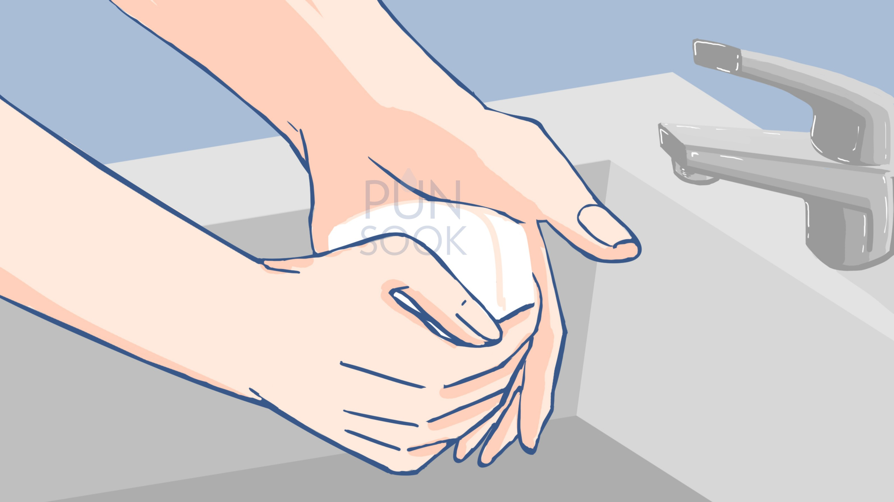

วิธีการสวนปัสสาวะ
ขั้นตอนที่ 1
เตรียมอุปกรณ์
ให้วางอุปกรณ์ทั้งหมดไว้ใกล้ตัว
ขั้นตอนที่ 2
จัดท่าให้เหมาะสม
สวนเอง : ให้นั่งพิงผนัง หรือพนักพิง
มีผู้สวนให้ : ให้อยู่ในท่านอนหงายกางขาออก
ขั้นตอนที่ 3
ล้างมือให้สะอาด
ล้างมือด้วยสบู่ และล้างด้วยน้ำสะอาด

ขั้นตอนที่ 4
ล้างสายสวนปัสสาวะ
ล้างสายสวนด้วนน้ำกลั่นหรือน้ำต้มสุก
ขั้นตอนที่ 5
หยดสารหล่อลื่นลงบนสายสวน
หยดสารหล่อลื่นโดยไม่ให้ปากหลอดสารหล่อลื่นสัมผัสกับสายสวน
ขั้นตอนที่ 6
ทำความสะอาดบริเวณอวัยวะเพศ
ใช้มือข้างนึงรูดหนังหุ้ม จนพบรูเปิดท่อปัสสาวะ เช็ดด้วยสำลีเป็นวงกลม ไม่เช็ดย้อนกลับไปย้อนมา
ขั้นตอนที่ 7
สอดสายสวน
โดยจะสอดเข้าไปในรูเปิดท่อปัสสาวะ อย่างนุ่มนวลจนสุดสาย
ขั้นตอนที่ 8
ปลดจุกสายสวน
ปล่อยปัสสาวะลงภาชนะรองรับปัสสาวะ จนกว่าปัสสาวะหยุดไหล
ขั้นตอนที่ 9
ถอดสายสวนออก
ใช้มือข้างนึงจับสายสวน ส่วนอีกข้างกดเหนือหัวหน่าว แล้วค่อยๆถอนสายสวนออก
ขั้นตอนที่ 10
ทำความสะอาดรูเปิดท่อปัสสาวะ
ใช้สำลี ทำความสะอาดอีกครั้งนึง